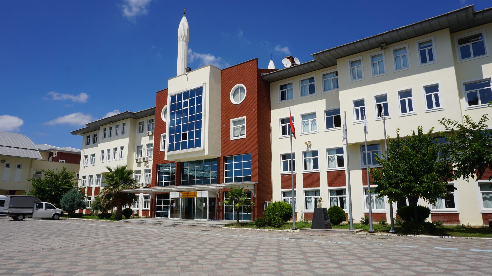

Eğitim
2016 yılında Kartal Anadolu İmam Hatip Lisesinde öğrenime başladım. 1 sene ingilizce arapça hazırlık dahil 5 senelik bir lise eğitimim oldu.
Hazırlık okuduğum dönemde ingilizcemi geliştirmek için 1 ay süreyle Malzeyada eğitim alma şansını elde ettim.
Programlama ile ilk karşılaşmam okulda açılan bir arduino kursu sayesinde olmuştu. Bu kursta yaptıklarımız bana meslek seçiminde ne istediğimi belirlememde yardımcı oldu.
2022 Yılında Sakarya Üniversitesi Bilgisayar Mühendisliği bölümüne başladım ve öğrenimim hala devam etmekte.